UrbanFlow: AI-Powered Traffic Solutions
Revolutionizing urban transportation with AI-driven solutions aimed at improving safety, efficiency, and sustainability in modern cities.
Ambulance Detection
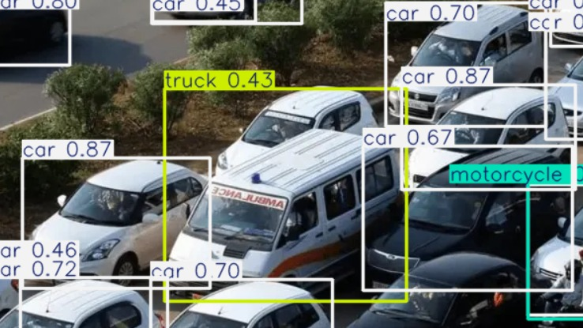
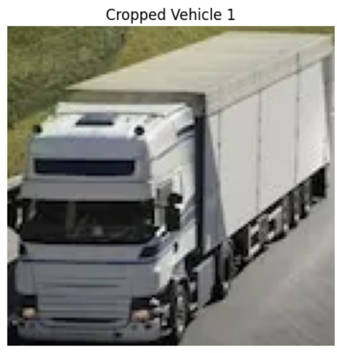
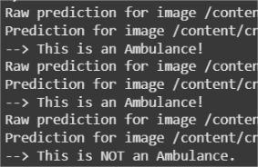
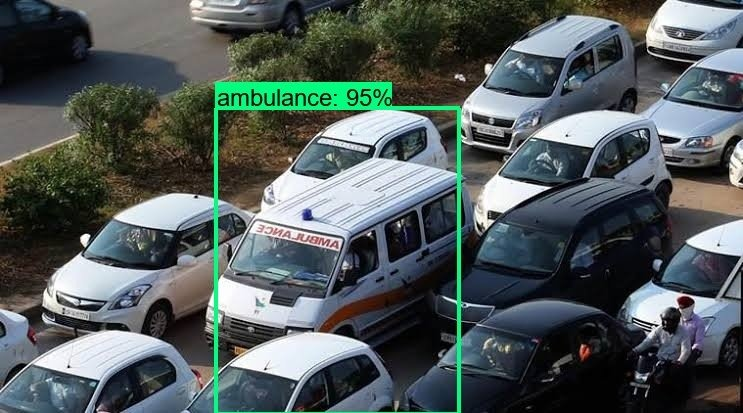
Our AI model uses real-time computer vision and deep learning techniques to detect ambulances. By prioritizing emergency vehicles at traffic signals, it reduces delays, ensuring quicker response times and better emergency services in urban environments.
Pygame Traffic Simulation
We use Pygame to create realistic traffic flow simulations that replicate real-world driving and pedestrian behaviors. This allows city planners to test traffic control measures and predict congestion before implementing them, optimizing urban mobility.
Traffic Prediction
Using machine learning, our system analyzes historical traffic data, weather conditions, and road sensor inputs to predict congestion patterns. This insight enables authorities to optimize signal timings, reduce bottlenecks, and recommend alternative routes for commuters.
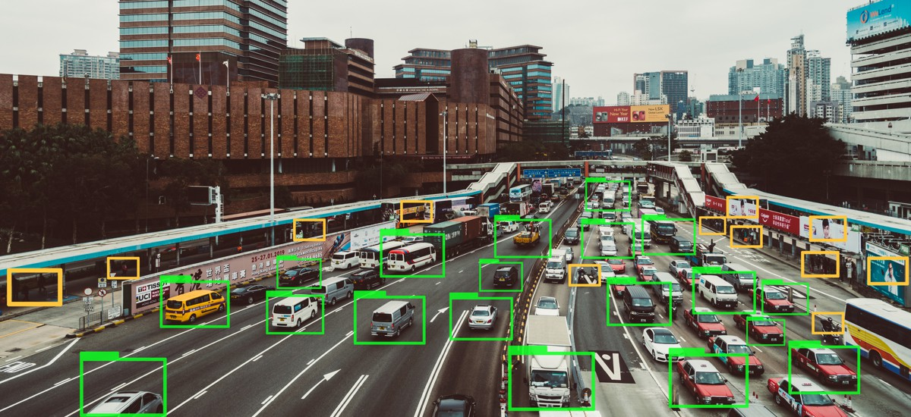
Helmet Detection
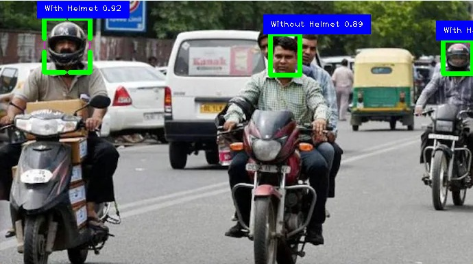
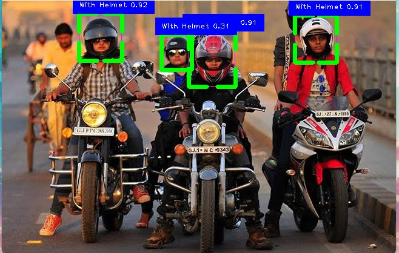
This AI-driven system automatically detects whether two-wheeler riders are wearing helmets. It assists law enforcement in promoting road safety by helping to identify violators and reducing the number of helmet-related fatalities on the roads.
Wrong Way Detection
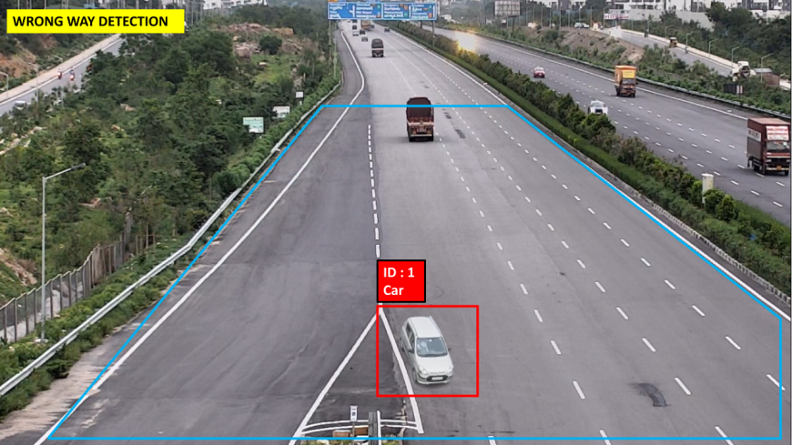
Our system uses AI to detect vehicles moving in the wrong direction, immediately issuing alerts to prevent potential accidents. This technology is integrated with smart traffic lights and warning signs to maintain safety, especially in high-risk zones.
Accident Detection
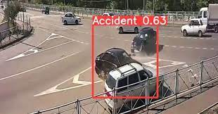
By analyzing live surveillance footage with deep learning algorithms, this system detects accidents in real-time. Once an accident is detected, emergency services are immediately notified, drastically reducing response times and improving outcomes.
Number Plate Recognition
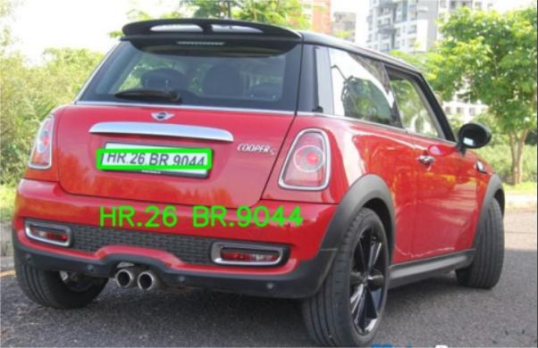
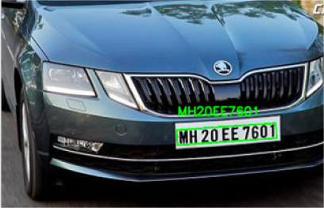
This AI-powered system detects vehicle number plates for various applications, including monitoring traffic violations and enhancing law enforcement capabilities. It ensures that all vehicles on the road are accounted for, improving overall road safety.
Red Light Violation Detection
Using AI to monitor traffic signals, this system detects red light violations in real-time. It helps prevent accidents caused by reckless driving and improves traffic management by issuing immediate fines or alerts to violators.
AI-Driven Fraud Detection
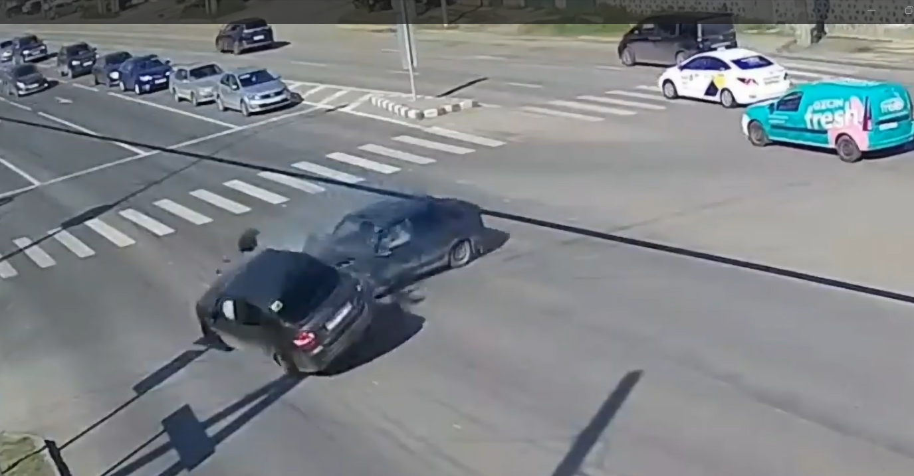
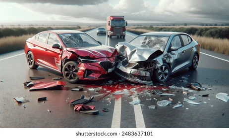
Our fraud detection system uses advanced AI to analyze images and videos submitted by users. By cross-referencing the data with online sources like Google Images and detecting AI-generated content, it identifies fraudulent claims and helps law enforcement and insurance companies prevent scams.